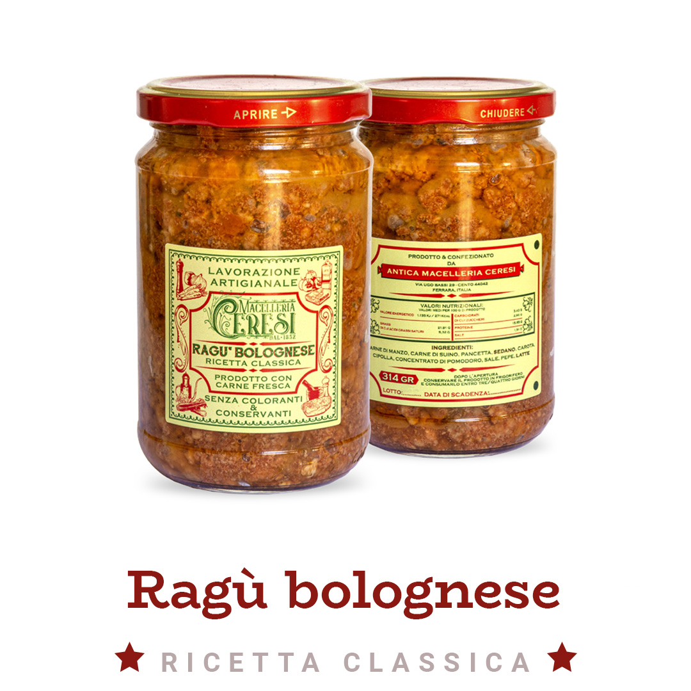

Home / Ragù / Ragù alla bolognese

Ragù della bottega · ricetta classica
Ragù alla bolognese
Il ragù di carne a pezzi grossi della Macelleria Ceresi, in vasetto da 314 g.
9,90 € IVA inclusa
Aggiungi al carrello- Spedizione express in Italia (isole escluse): 21,90 €, gratis sopra 199 €
- Ritiro gratuito in bottega a Cento (FE), Via Ugo Bassi 29
- Spedizioni dal lunedì al mercoledì, sottovuoto o in atmosfera protettiva
- Domande? 051 901115 · marcelloceresi@gmail.com
Com'è fatto
Il ragù Ceresi nasce nel 2020 da una ricetta della mamma, Carlotta: la carne è tritata grossa apposta, per sentirla nel piatto.
Ricetta classica alla bolognese con manzo, maiale e pancetta, il soffritto di sedano, carota e cipolla e un goccio di latte.
Dati tecnici
| Ingredienti | carne di manzo, carne di suino, pancetta, sedano, carota, cipolla, concentrato di pomodoro, sale, pepe, latte |
|---|---|
| Formato | vasetto da 314 g |
| Reparto | Ragù |
Qui le recensioni dei clienti (da collegare: sulla home del sito ce ne sono già due, firmate)